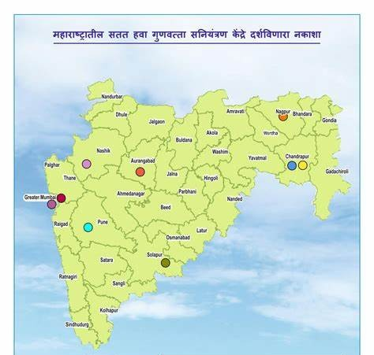

Good AQI (Low Pollution)
Mahabaleshwar – A hill station known for its clean air and pleasant climate. The AQI here is generally favorable.
Matheran – Another hill station close to Mumbai, offering cleaner air due to fewer vehicles and more greenery.
Alibaug – Coastal areas like Alibaug tend to have better air quality, though it's also impacted by traffic and construction during peak tourist seasons.
Lavasa – Located in the Western Ghats, Lavasa typically has a cleaner air quality, being a planned city surrounded by hills.
Tungarli Lake (Lonavala) – A quieter area with better air quality compared to bustling towns.
Bad AQI (High Pollution)
Mumbai – Due to high traffic density, industrial activity, and construction, Mumbai regularly experiences poor air quality, particularly during the winter months.
Pune – While Pune is generally cleaner than Mumbai, it still faces air quality issues, especially during the festival season when fireworks increase pollution.
Nagpur – Urbanization and traffic have led to higher pollution levels, making the AQI in Nagpur quite unhealthy at times.
Nashik – The increase in industrial activity and vehicle emissions has led to worsening air quality, especially during harvest seasons when dust is prevalent.
Solapur – The AQI in Solapur can reach unhealthy levels, particularly due to agricultural practices like crop burning and increasing urbanization.